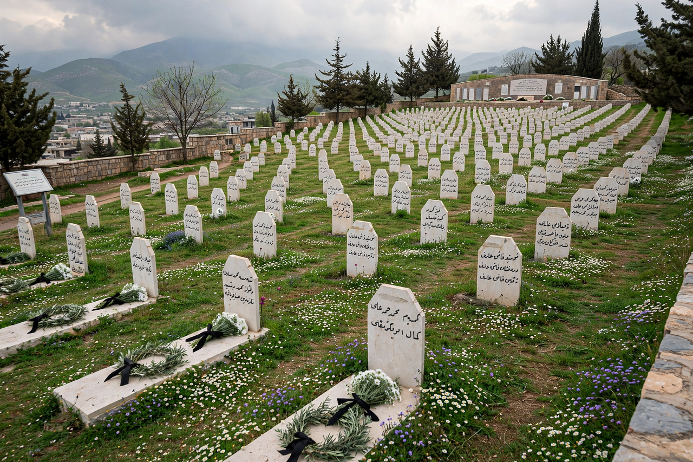

Halabja chemical attack
From Wikipedia, the free encyclopedia

The Halabja massacre, also known as the Halabja chemical attack, was a massacre of Kurdish people by the Iraqi government of Saddam Hussein on 16 March 1988, in the closing days of the Iran–Iraq War. Iraqi aircraft dropped chemical weapons — mustard gas, sarin, tabun and VX are reported — on the town of Halabja in Iraqi Kurdistan hours after its capture by Iranian and Patriotic Union of Kurdistan forces, killing an estimated 3,200–5,000 people, mostly civilians, and injuring thousands more. It remains the largest chemical attack on a civilian population in history.
Context and attack
The attack formed part of the Anfal campaign, Saddam's counter-insurgency against the Kurds (1986–89) that killed tens of thousands and destroyed thousands of villages. On 16 March 1988, after conventional bombing, jets dropped chemical munitions through the afternoon; survivors described smells of garlic and apples, birds falling, and streets of bodies — Omid's photograph of a father cradling his dead infant became the atrocity's icon.
Aftermath
Iraq blamed Iran; Western governments, then supplying Iraq, muted their response — a complicity later excavated in detail. The massacre was formally recognised as genocide by Iraq's parliament and courts (2010); Anfal's architect, Ali Hassan al-Majid ('Chemical Ali'), was hanged in 2010 after conviction for this and other crimes. Survivors still suffer cancers, birth defects and respiratory disease; Halabja's memorial and 16 March commemorations anchor Kurdish national memory.